Analysis plots (sim frame, Y flipped against the G-code renders)
BEFORE D44 (D41): op 5 by class, s1.2

AFTER D44 (D45 B s2.1): op 5 by class
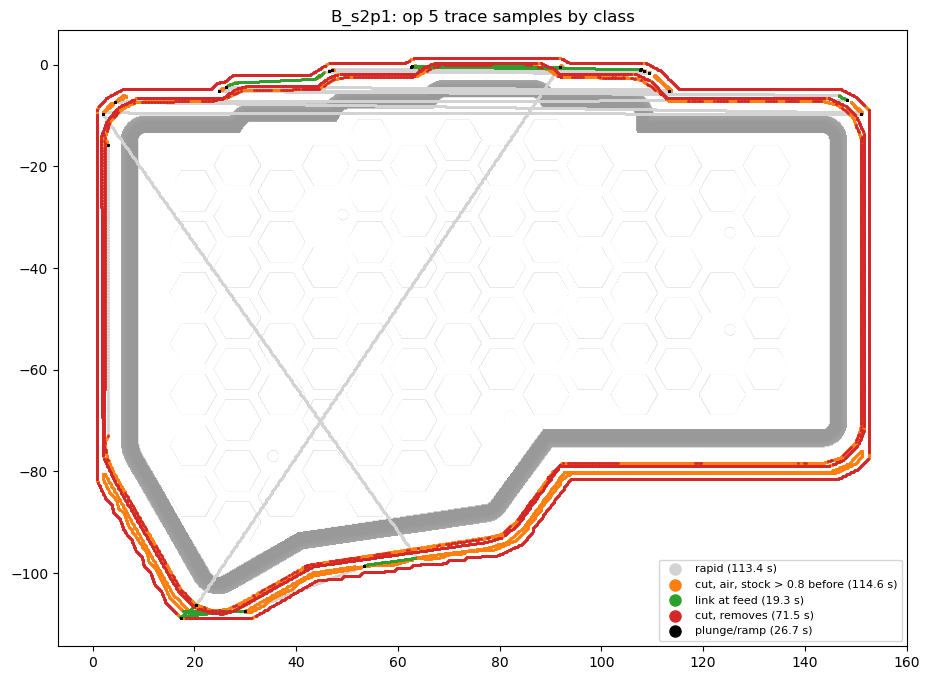
BEFORE D43 (D38): op 1 entries by cause, s1.2

AFTER D43 (D45 B s2.1): op 1 entries by cause
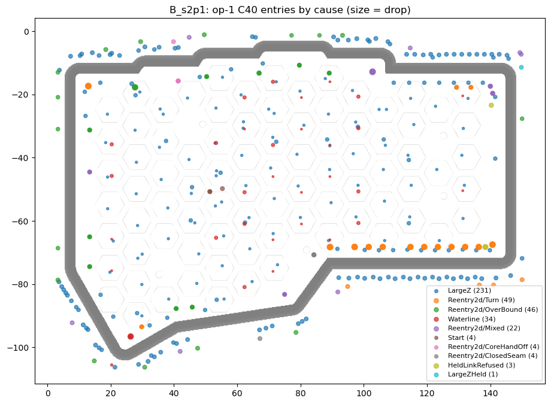
D45 toolpath renders (Corne, from program.nc; colour = Z, black dot = plunge, grey = rapid)
CP (k_cp_fix6job): 3D Rough 1
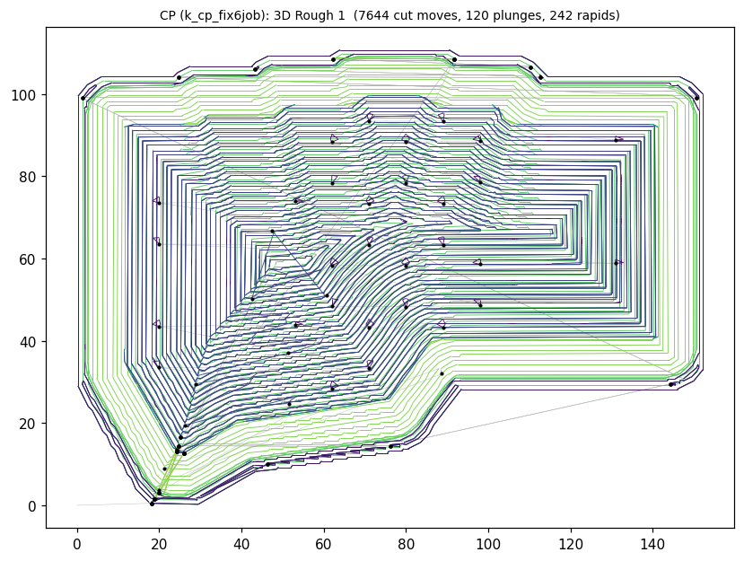
CP (k_cp_fix6job): op 1 by level

CP (k_cp_fix6job): 3D Rough 1 [copy]
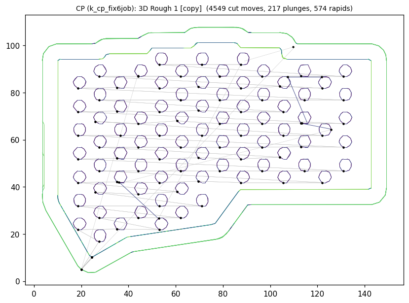
geo s1.2 default split (A): 3D Rough 1
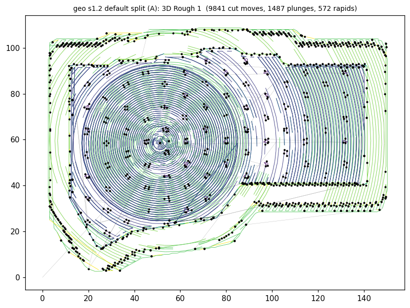
geo s1.2 default split (A): op 1 by level
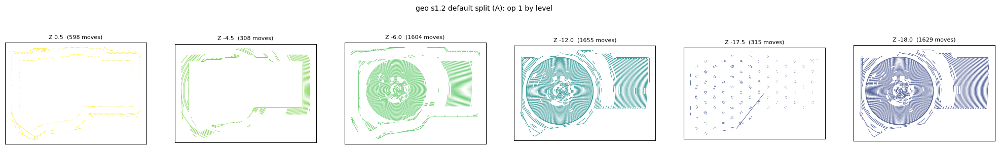
geo s1.2 default split (A): 3D Rough 1 [edges, CP rest]
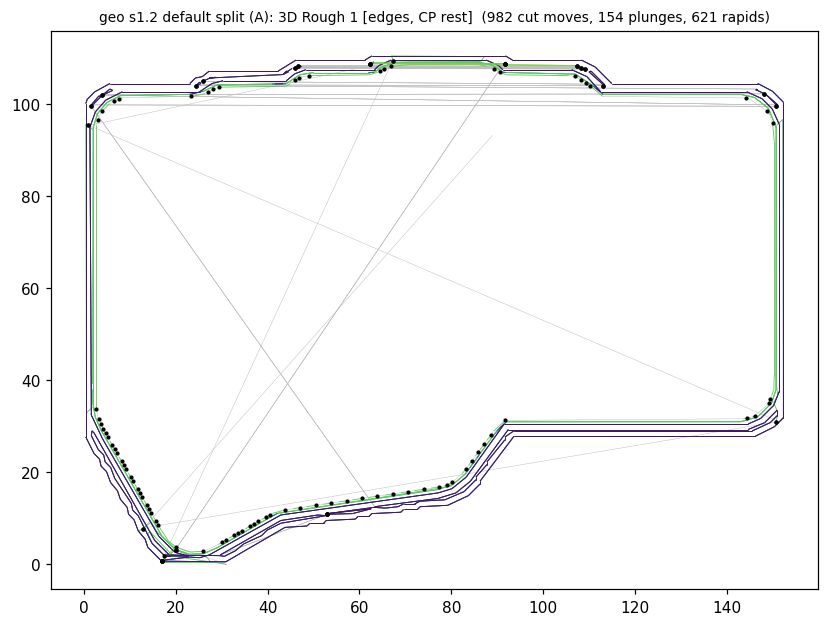
geo s1.2 default split (A): 3D Rough 1 [copy]
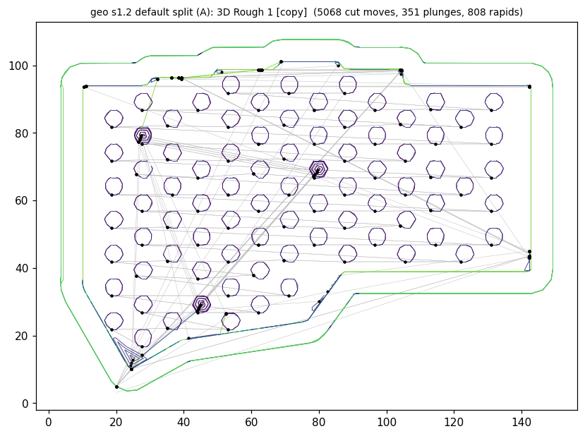
geo s2.1 load split (B): 3D Rough 1
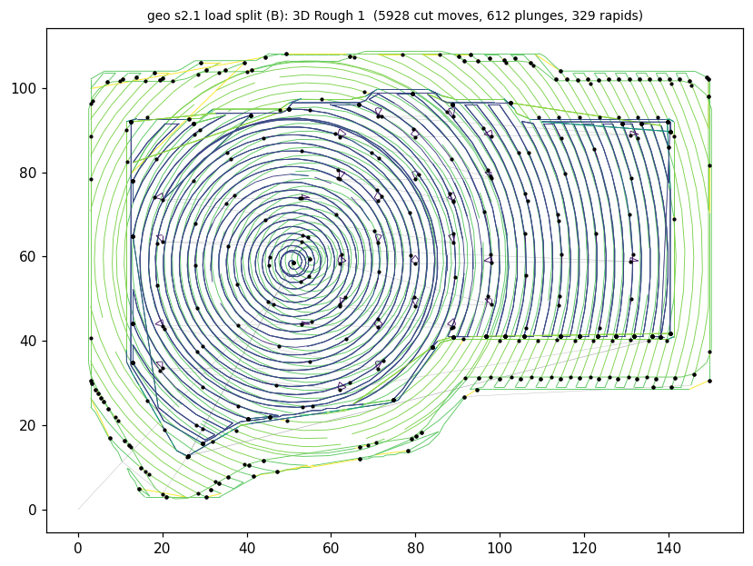
geo s2.1 load split (B): op 1 by level
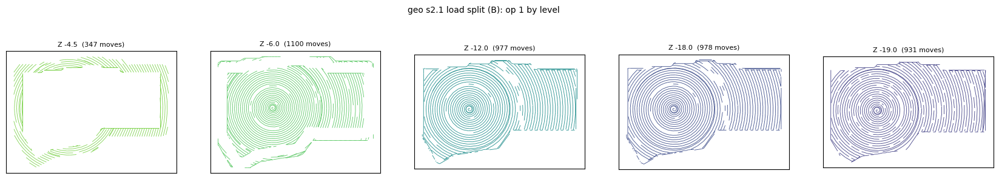
geo s2.1 load split (B): 3D Rough 1 [edges, CP rest]
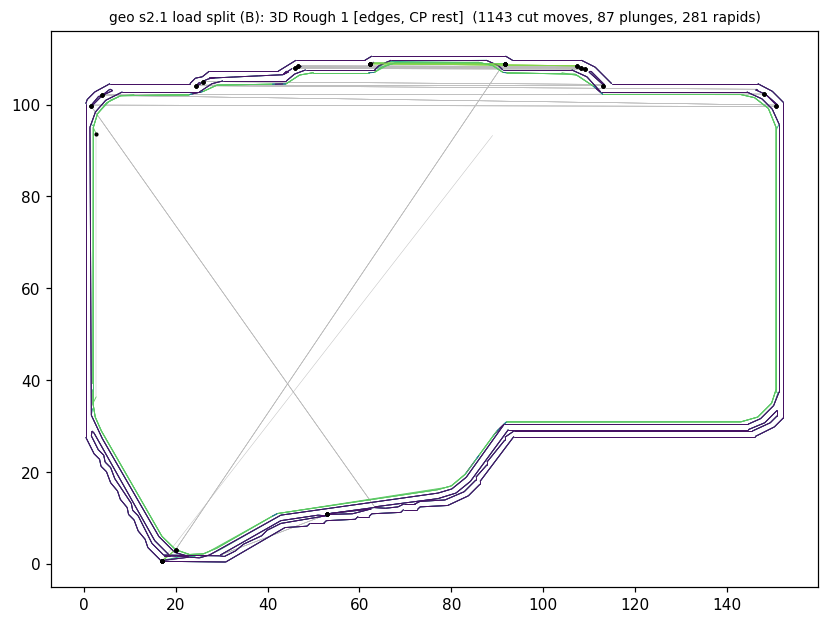
geo s2.1 load split (B): 3D Rough 1 [copy]
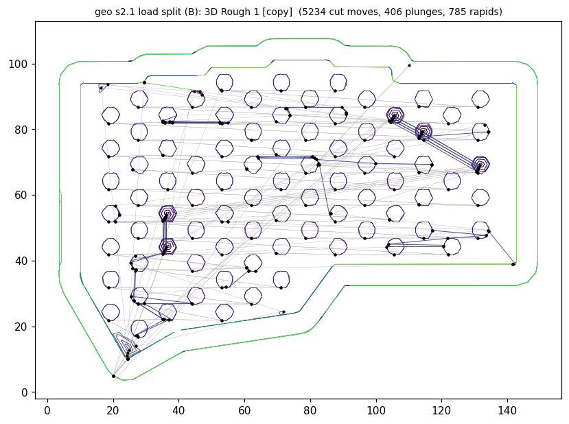